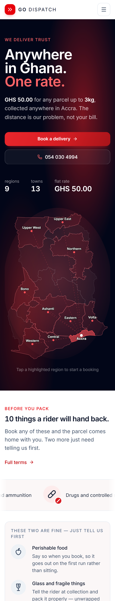
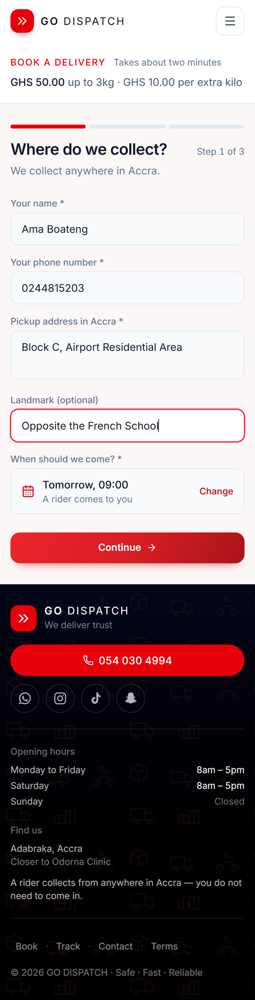
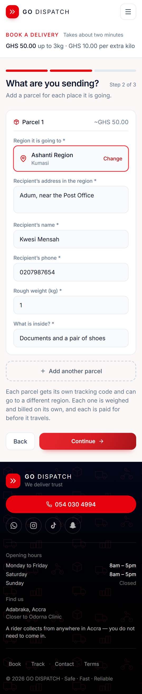
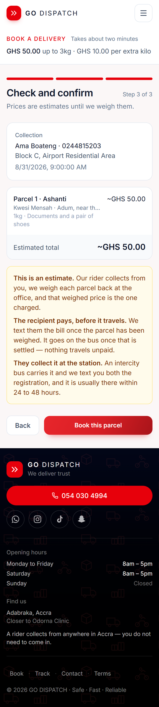
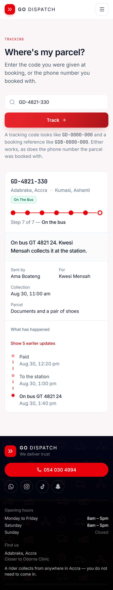

GO DISPATCH
Here is exactly how it works.
WHERE WE GO
Collected anywhere in Accra. GHS 50 up to 3kg.
STEP ONE

STEP TWO



THEN WHAT HAPPENS
STEP THREE

godispatchgh.com
054 030 4994
Safe · Fast · Reliable